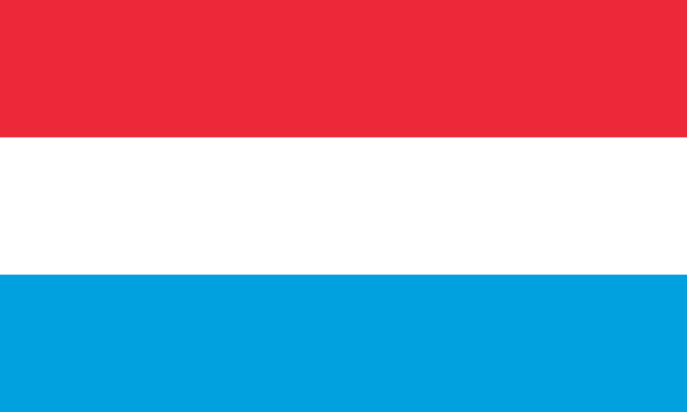
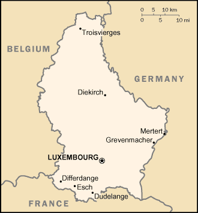

Luxemburg eli Luxemburgin suurherttuakunta on noin puolen miljoonan asukkaan perustuslaillinen suurherttuakunta ja sisämaavaltio Länsi-Euroopassa. Sen naapurimaat ovat Ranska, Belgia ja Saksa.
Luxemburg on Euroopan unionin pienimpiä jäsenvaltioita. Sen pinta-alasta (2 586 km²) noin kaksi kolmannesta on alavaa maatalousseutua, mutta pohjoisin kolmannes on vuoristoista Ardennien aluetta. Vuosisatojen varrella maa on ollut välillä itsenäinen herttuakunta, mutta usein osa naapurimaitaan Ranskaa, Saksaa ja Alankomaita. Luxemburg on toiminut aktiivisesti Euroopan unionissa alusta alkaen, ja monien kansainvälisten elimien päämajat ovat Luxemburgissa. Maan vauraus syntyi aikoinaan terästeollisuudesta, mutta viime vuosikymmeninä pankkitoiminta on noussut tärkeämmäksi

| Puhutut kielet = |
luxemburg, ranska, saksa |
| asukasmäärä = |
549680 |
| rahayksikkö = |
Euro |
| BKT = |
41 090 milj.USD |
luonto ja ilmasto
Luxemburgin tyypilliset puulajit ovat kuusi, tammi ja vaahtera. Siellä, missä metsä ei kasva, tavataan rautatammea ja kanervaa. Maan eteläosassa on pääasiassa viinitarhoja ja viljelysmaata. Kaakkoisessa Luxemburgissa tavataan kahta välimerenkasvillisuuteen kuuluvaa lajia. Metsissä elää kauriita, villisikoja ja monia lintulajeja. Maassa on myös harvinaisia lintulajeja, kuten mustahaikaroita ja pyitä. Minervanpöllö on kuollut sukupuuttoon.
Luxemburgin ilmasto on mantereisempi kuin esimerkiksi Hollannin; Ardennien vuoristo antaa lisäsuojaa meren vaikutukselta. Maan eteläosassa ilmasto on kuivempi ja aurinkoisempi kuin pohjoisessa. Talvet voivat olla varsin ankaria, lumipeite voi kestää joitakin viikkoja.
Vuoden kylmin kuukausi on tammikuu, jolloin Luxemburgin kaupungissa keskimääräinen alin lämpötila on −2,4 astetta. Lämpimin on heinäkuu, jolloin keskimääräinen ylin lämpötila on 22 astetta.
Kartta ja kaupungit

Luxemburgin suurin kaupunki on Luxemburg, jonka sukasluku on 103641 asukasta.
Seuraavaksi suurin kaupunki on Esch-surAlzette, 27559.